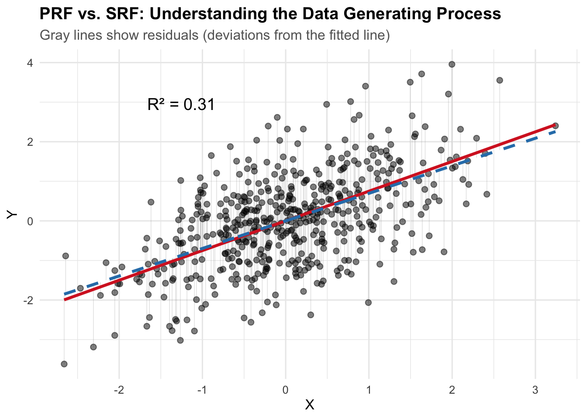

simulate_regression_data <- function(
n = 500, # Sample size
beta_0 = 0, # Intercept
beta_1 = 0.2, # Slope (controls correlation strength)
x_mean = 0, # Mean of X
x_sd = 1, # Standard deviation of X (controls variance)
error_sd = 1 # Standard deviation of normal
) {
X <- rnorm(n, mean = x_mean, sd = x_sd)
errors <- rnorm(n, mean = 0, sd = error_sd)
Y <- beta_0 + beta_1 * X + errors
# Return as data frame
data.frame(
x = X,
y = Y,
true_y = beta_0 + beta_1 * X, # Y without error
error = errors
)
}4 Estimation in R
We’ll generally try to use real data in this class. However, it is useful to generate our own synthetic data. Eventually we can build this into Monte Carlo Experiments to explore the characteristics of our estimators. I find this useful to understand how sampling, the DGP, coding and estimation all come together.
In the last chapter, we generated synthetic data using R functions. Let’s extend that logic here.
Data Generating Process (DGP): The DGP can be thought of as the underlying process that produces the (sample) data we observe. This is akin to the PRF versus SRF distinction we already discussed. But here, we’re directly simulating data from a known process.
set.seed(123)
sim_dat <- simulate_regression_data(
n = 500,
beta_1 = 0.75,
x_sd = 1,
error_sd = 1
)
head(sim_dat) x y true_y error
1 -0.56047565 -1.0222496 -0.42035673 -0.60189285
2 -0.23017749 -1.1663317 -0.17263312 -0.99369859
3 1.55870831 2.1958163 1.16903124 1.02678506
4 0.07050839 0.8039426 0.05288129 0.75106130
5 0.12928774 -1.4122007 0.09696580 -1.50916654
6 1.71506499 1.1911513 1.28629874 -0.09514745library(ggplot2)
# Fit the sample regression line
fit <- lm(y ~ x, data = sim_dat)
sim_dat$fitted_y <- fitted(fit)
# Calculate R-squared
r_squared <- summary(fit)$r.squared
ggplot(sim_dat, aes(x = x, y = y)) +
geom_segment(aes(xend = x, yend = fitted_y),
alpha = 0.2, color = "gray50", linewidth = 0.3) +
geom_point(alpha = 0.5, size = 2) +
geom_line(aes(y = true_y), color = "#d62728", linewidth = 1.2) +
geom_line(aes(y = fitted_y), color = "#2c7fb8", linewidth = 1.2, linetype = "dashed") +
annotate("text", x = min(sim_dat$x) + 1, y = max(sim_dat$y) - 1,
label = paste0("R² = ", round(r_squared, 3)),
size = 5, hjust = 0) +
labs(
title = "PRF vs. SRF: Understanding the Data Generating Process",
subtitle = "Gray lines show residuals (deviations from the fitted line)",
x = "X",
y = "Y"
) +
theme_minimal(base_size = 12) +
theme(
plot.title = element_text(face = "bold"),
plot.subtitle = element_text(color = "gray40")
)
The red solid line is the PRF (Population Regression Function): the true data generating process with \(\beta_0 = 2\) and \(\beta_1 = 0.8\). The blue dashed line is the SRF (Sample Regression Function): our estimated regression line from the observed data. The gray lines show the residuals—deviations from each observed point to the fitted line (SRF).
4.1 Estimation
# Fit the linear model
fit <- lm(y ~ x, data = sim_dat)
summary(fit)
Call:
lm(formula = y ~ x, data = sim_dat)
Residuals:
Min 1Q Median 3Q Max
-2.75568 -0.67016 0.01042 0.63073 2.73709
Coefficients:
Estimate Std. Error t value Pr(>|t|)
(Intercept) -0.0004678 0.0452219 -0.01 0.992
x 0.6960271 0.0465049 14.97 <2e-16 ***
---
Signif. codes: 0 '***' 0.001 '**' 0.01 '*' 0.05 '.' 0.1 ' ' 1
Residual standard error: 1.011 on 498 degrees of freedom
Multiple R-squared: 0.3103, Adjusted R-squared: 0.3089
F-statistic: 224 on 1 and 498 DF, p-value: < 2.2e-16Elements of the output: - Coefficients: The estimated intercept and slope, along with their standard errors, t-values, and p-values. - Residual standard error: The average distance that the observed values fall from the regression line - R-squared: The proportion of variance in the dependent variable that is explained by the independent variable(s). - F-statistic: Tests whether at least one predictor variable has a non-zero coefficient
Generating Predictions: We can use the fitted model to generate predictions for new data points. All we need to do is create a new data frame with the same structure as the original data (i.e., it should have a column named x), and then pass it to the predict() function.
cat("Predicted value for x = 1:",
predict(fit, newdata = data.frame(x = 1))
)Predicted value for x = 1: 0.6955593Likewise, we could generate predictions for a range of x values.
multiple_x <- seq(0.25, 0.35, by = 0.05)
predict(fit, newdata = data.frame(x = multiple_x)) 1 2 3
0.1735390 0.2083404 0.2431417 Or we could just use the original data points to create the fitted values – the predictions for each \(x_i\) in the original data.
predict(fit) |>
head() 1 2 3 4 5 6
-0.39057401 -0.16067754 1.08443545 0.04860798 0.08952000 1.19326394 4.2 Model Fit: Understanding \(R^2\), Correlation, and ANOVA
Recall from earlier chapters that there’s an intimate relationship between bivariate linear regression, the correlation coefficient, and Analysis of Variance (ANOVA).
The correlation \(r\) is the same as the standardized slope coefficient in a bivariate regression.
fit <- lm(scale(y) ~ scale(x), data = sim_dat)
summary(fit)
Call:
lm(formula = scale(y) ~ scale(x), data = sim_dat)
Residuals:
Min 1Q Median 3Q Max
-2.26700 -0.55132 0.00857 0.51888 2.25170
Coefficients:
Estimate Std. Error t value Pr(>|t|)
(Intercept) 3.351e-17 3.718e-02 0.00 1
scale(x) 5.570e-01 3.722e-02 14.97 <2e-16 ***
---
Signif. codes: 0 '***' 0.001 '**' 0.01 '*' 0.05 '.' 0.1 ' ' 1
Residual standard error: 0.8313 on 498 degrees of freedom
Multiple R-squared: 0.3103, Adjusted R-squared: 0.3089
F-statistic: 224 on 1 and 498 DF, p-value: < 2.2e-16cor(sim_dat$x, sim_dat$y)[1] 0.5570035Because we’ve simulated these data, we also know the true data generating process. This gives us a unique opportunity to explore how well our sample regression function (SRF) recovers the parameters of the population regression function (PRF).
4.2.1 Decomposing the Variance
The fundamental decomposition in ANOVA is:
\[TSS = RegSS + RSS\]
Or equivalently:
\[ \sum (Y_i - \bar{Y})^2 = \sum (\hat{Y}_i - \bar{Y})^2 + \sum (Y_i - \hat{Y}_i)^2 \]
Where:
\(TSS = \sum (Y_i - \bar{Y})^2\) is the Total Sum of Squares. This is the total variation in \(Y\) around its mean.
\(RegSS = \sum (\hat{Y}_i - \bar{Y})^2\) is the Regression Sum of Squares. This is the variation in the fitted values around the mean of \(Y\). It represents the reduction in error from using the linear model rather than just \(\bar{Y}\).
\(RSS = \sum (Y_i - \hat{Y}_i)^2\) is the Residual Sum of Squares. This is the variation in \(Y\) that remains unexplained by the model.
Let’s “manually” calculate these for our simulated data:
# Calculate the mean of y
y_bar <- mean(sim_dat$y)
# Calculate TSS, RegSS, and RSS
TSS <- sum((sim_dat$y - y_bar)^2)
RegSS <- sum((sim_dat$fitted_y - y_bar)^2)
RSS <- sum((sim_dat$y - sim_dat$fitted_y)^2)
# Display the decomposition
cat("Total Sum of Squares (TSS):", round(TSS, 3), "\n")Total Sum of Squares (TSS): 737.321 cat("Regression Sum of Squares (RegSS):", round(RegSS, 2), "\n")Regression Sum of Squares (RegSS): 228.76 cat("Residual Sum of Squares (RSS):", round(RSS, 3), "\n")Residual Sum of Squares (RSS): 508.565 cat("RegSS + RSS =", round(RegSS + RSS, 3), "\n")RegSS + RSS = 737.321 cat("Difference from TSS:", round(TSS - (RegSS + RSS), 3), "\n")Difference from TSS: 0 This seems to work: \(TSS = RegSS + RSS\). The difference is effectively zero…maybe a little off simply due to rounding.
4.2.2 \(R^2\): The Coefficient of Determination
\(R^2\) is defined as the proportional reduction in error from using the linear model. How much better do we explain variation in \(Y\) using our model? Does it explain more variation than just using the mean of \(Y\)?
\[R^2 = \frac{RegSS}{TSS} = 1 - \frac{RSS}{TSS}\]
\(R^2\) is a statistic that ranges from 0 to 1. An \(R^2\) of 0 means the model explains none of the variation in \(Y\). \(E(Y | X) = E(Y) = \bar{Y}\)
At the other extreme \(R^2\) of 1 means the model explains all of the variation, a **deterministic* relationship; a correlation of 1.
# Calculate R-squared manually
r_squared_manual <- RegSS / TSS
r_squared_from_model <- summary(fit)$r.squared
cat("R² (manual calculation):", round(r_squared_manual, 4), "\n")R² (manual calculation): 0.3103 cat("R² (from model summary):", round(r_squared_from_model, 4), "\n")R² (from model summary): 0.3103 Both calculations yield the same result. Our model explains approximately 31% of the variation in \(Y\).
4.2.3 The Relationship Between \(R^2\) and Correlation
To bring things full circle, let’s connect \(R^2\) to the correlation coefficient, \(r\). In bivariate regression – i.e., one predictor – there’s a direct correspondence between \(R^2\) and the Pearson correlation coefficient, \(r\):
\[R^2 = r^2\]
More precisely:
\[r = \sqrt{R^2} \times \text{sign}(\beta)\]
Where \(\text{sign}(\beta)\) is positive if the slope is positive, negative if the slope is negative. Let’s verify this:
# Calculate correlation
correlation <- cor(sim_dat$x, sim_dat$y)
slope_sign <- sign(coef(fit)[2])
cat("Correlation (r):", round(correlation, 4), "\n")Correlation (r): 0.557 cat("Square root of R²:", round(sqrt(r_squared_from_model), 4), "\n")Square root of R²: 0.557 cat("Sign of slope:", slope_sign, "\n")Sign of slope: 1 cat("√R² × sign(β):", round(sqrt(r_squared_from_model) * slope_sign, 4), "\n")√R² × sign(β): 0.557 cat("\nVerification: r² = R²?", round(correlation^2, 4), "=", round(r_squared_from_model, 4), "\n")
Verification: r² = R²? 0.3103 = 0.3103 The relationship again is apparent. \(R^2\) is simply the squared correlation coefficient or the squared standardized coefficient in bivariate regression.
4.2.4 The F-statistic and ANOVA
The F-statistic tests the null hypothesis that all slope coefficients are zero. In bivariate regression, this is equivalent to testing whether \(\beta = 0\). The F-statistic is calculated from the ANOVA decomposition:
\[F = \frac{RegSS / df_{reg}}{RSS / df_{res}} = \frac{MSS_{reg}}{MSS_{res}}\]
Where \(df_{reg} = k\) (the number of predictors) and \(df_{res} = n - k - 1\). The Mean Squares are the Sum of Squares divided by their degrees of freedom.
4.2.4.1 Why the F-distribution?
Thinking back to POL 681, recall the F-statistic is a ratio of two variances (the mean squares). These variances are individually distributed as scaled chi-squared distributions under the null hypothesis.
In particular, both \(RegSS / \sigma^2\) and \(RSS / \sigma^2\) follow &^2$ distributions (scaled by their respective degrees of freedom). The ratio of two independent chi-squared random variables, each divided by its degrees of freedom, follows an F-distribution with degrees of freedom \((df_{reg}, df_{res})\).
In our case, the F-distribution describes the distribution of the ratio of two estimated variances when the null hypothesis is true. If the model explains a lot of variance, the F-statistic will be large. If not, will approach zero. We use F-tables or p-values to determine whether our observed F-statistic is unlikely under the null hypothesis.
Using null hypothesis testing, the hypotheses may be states as:
- \(H_0\): \(\beta = 0\) (the model does not explain more variance than the null model)
- \(H_a\): \(\beta \neq 0\) (the model explains more variance than the null model)
# Extract from model
n <- nobs(fit)
k <- 1 # one predictor
df_reg <- k
df_res <- n - k - 1
MSS_reg <- RegSS / df_reg
MSS_res <- RSS / df_res
F_stat <- MSS_reg / MSS_res
# Compare to model output
model_f <- summary(fit)$fstatistic[1]
cat("F-statistic (manual calculation):", round(F_stat, 4), "\n")F-statistic (manual calculation): 224.0038 cat("F-statistic (from lm):", round(model_f, 4), "\n")F-statistic (from lm): 224.0038 cat("Degrees of freedom:", df_reg, "and", df_res, "\n")Degrees of freedom: 1 and 498 The F-statistic is large and significant, indicating that the model fits significantly better than the null model (just using \(\bar{Y}\)).
4.2.5 A Shiny App
This section provides an interactive Shiny app for exploring properties of the OLS estimator.
Use the sidebar controls to adjust the data-generating process and observe how the sample regression function (SRF) relates to the population regression function (PRF).
The Monte Carlo tab lets you simulate repeated sampling to see the distribution of OLS estimates.
TipWhat to Look For When Varying Parameters
Increasing the error standard deviation (\(\sigma_\epsilon\)):
- The scatter around the PRF increases — points fan out from the true line.
- The SRF deviates more from the PRF; residuals grow.
- \(R^2\) decreases — the model explains less of the variation in \(Y\).
- In the Monte Carlo tab, the sampling distribution of \(b\) becomes wider. The estimator is still unbiased (\(E(b) = \beta\)), but individual estimates are less precise. This is exactly what \(var(b) = \sigma^2 / \sum(X_i - \bar{X})^2\) predicts.
Increasing the standard deviation of \(X\) (\(\sigma_X\)):
- The data spread out along the \(X\)-axis, giving the regression more “leverage.”
- \(R^2\) increases — more variation in \(X\) means the systematic component \(\beta X\) explains a larger share of total variation.
- The Monte Carlo sampling distribution of \(b\) becomes narrower. More spread in \(X\) increases \(\sum(X_i - \bar{X})^2\), which shrinks \(var(b)\). This is the efficiency gain from greater variation in the independent variable.
Increasing the sample size (\(n\)):
- The SRF converges toward the PRF — with more data, we estimate \(\alpha\) and \(\beta\) more accurately.
- The Monte Carlo distribution of \(b\) tightens around \(\beta\). Standard errors shrink roughly proportional to \(1/\sqrt{n}\).
- \(R^2\) stabilizes closer to its population value.
Changing \(\beta\) (the slope):
- A larger \(|\beta|\) steepens the PRF and increases the signal relative to the noise.
- \(R^2\) increases because the systematic component of \(Y\) becomes larger relative to the error.
- Setting \(\beta = 0\) shows what happens under the null hypothesis — the SRF still estimates some slope due to sampling error, but the Monte Carlo distribution centers on zero.